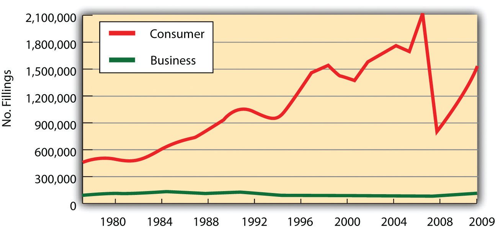
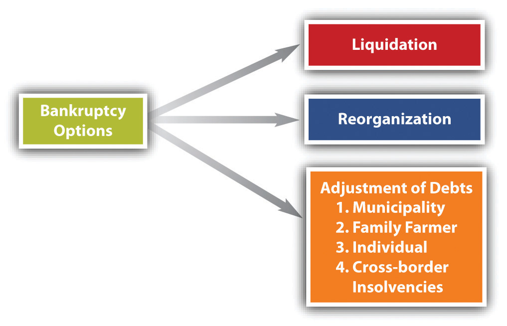

Bankruptcy law governs the rights of creditors and insolvent debtors who cannot pay their debts. In broadest terms, bankruptcy deals with the seizure of the debtor’s assets and their distribution to the debtor’s various creditors. The term derives from the Renaissance custom of Italian traders, who did their trading from benches in town marketplaces. Creditors literally “broke the bench” of a merchant who failed to pay his debts. The term banco rotta (broken bench) thus came to apply to business failures.
In the Victorian era, many people in both England and the United States viewed someone who became bankrupt as a wicked person. In part, this attitude was prompted by the law itself, which to a greater degree in England and to a lesser degree in the United States treated the insolvent debtor as a sort of felon. Until the second half of the nineteenth century, British insolvents could be imprisoned; jail for insolvent debtors was abolished earlier in the United States. And the entire administration of bankruptcy law favored the creditor, who could with a mere filing throw the financial affairs of the alleged insolvent into complete disarray.
Today a different attitude prevails. Bankruptcy is understood as an aspect of financing, a system that permits creditors to receive an equitable distribution of the bankrupt person’s assets and promises new hope to debtors facing impossible financial burdens. Without such a law, we may reasonably suppose that the level of economic activity would be far less than it is, for few would be willing to risk being personally burdened forever by crushing debt. Bankruptcy gives the honest debtor a fresh start and resolves disputes among creditors.
The US Constitution prohibits the states from impairing the “obligation of a contract.” This means that no state can directly provide a means for discharging a debtor unless the debt has been entirely paid. But the Constitution in Article I, Section 8, does give the federal government such a power by providing that Congress may enact a uniform bankruptcy law.
Congress passed bankruptcy laws in 1800, 1841, and 1867. These lasted only a few years each. In 1898, Congress enacted the Bankruptcy Act, which together with the Chandler Act amendments in 1938, lasted until 1978. In 1978, Congress passed the Bankruptcy Reform Act, and in 2005, it adopted the current law, the Bankruptcy Abuse Prevention and Consumer Protection Act (BAPCPA). This law is the subject of our chapter.
At the beginning of the twentieth century, bankruptcies averaged fewer than 20,000 per year. Even in 1935, at the height of the Great Depression, bankruptcy filings in federal court climbed only to 69,000. At the end of World War II, in 1945, they stood at 13,000. From 1950 on, the statistics show a steep increase. During the decade before the 1978 changes, bankruptcy filings in court averaged 181,000 a year—reaching a high of 254,000 in 1975. They soared to over 450,000 filings per year in the 1980s and mostly maintained that pace until just before the 2005 law took effect (see Figure 35.1 "US Bankruptcies, 1980–2009"). The 2005 act—preceded by “massive lobbying largely by banks and credit card companies”CCH Bankruptcy Reform Act Briefing, “Bankruptcy Abuse Prevention and Consumer Protection Act of 2005,” April 2005, http://www.cch.com/bankruptcy/bankruptcy_04-21.pdf.—was intended by its promoters to restore personal responsibility and integrity in the bankruptcy system. The law’s critics said it was simply a way for the credit card industry to extract more money from consumers before their debts were wiped away.
Figure 35.1 US Bankruptcies, 1980–2009
Bankruptcy Action.com, http://www.bankruptcyaction.com/USbankstats.htm, statistics from Administrative Office of the Courts.
Each federal judicial district has a US Bankruptcy Court, whose judges are appointed by US Courts of Appeal. Unless both sides agree otherwise, bankruptcy judges are to hear only bankruptcy matters (called core proceedings). Bankruptcy trustees are government lawyers appointed by the US Attorney General. They have administrative responsibilities in overseeing the proceedings.
The filing fee for a bankruptcy is about $200, depending upon the type of bankruptcy, and the typical lawyer’s fee for uncomplicated cases is about $1,200–$1,400.
The BAPCPA provides for six different kinds of bankruptcy proceedings. Each is covered by its own chapter in the act and is usually referred to by its chapter number (see Figure 35.2 "Bankruptcy Options").
Figure 35.2 Bankruptcy Options
The bankruptcy statute (as opposed to case law interpreting it) is usually referred to as the bankruptcy code. The types of bankruptcies are as follows:
The BAPCPA includes three chapters that set forth the procedures to be applied to the various proceedings. Chapter 1, “General Provisions,” establishes who is eligible for relief under the act. Chapter 3, “Case Administration,” spells out the powers of the various officials involved in the bankruptcy proceedings and establishes the methods for instituting bankruptcy cases. Chapter 5, “Creditors, the Debtor, and the Estate,” deals with the debtor’s “estate”—his or her assets. It lays down ground rules for determining which property is to be included in the estate, sets out the powers of the bankruptcy trustee to “avoid” (invalidate) transactions by which the debtor sought to remove property from the estate, orders the distribution of property to creditors, and sets forth the duties and benefits that accrue to the debtor under the act.
To illustrate how these procedural chapters (especially Chapter 3 and Chapter 5) apply, we focus on the most common proceeding: liquidation (Chapter 7). Most of the principles of bankruptcy law discussed in connection with liquidation apply to the other types of proceedings as well. However, some principles vary, and we conclude the chapter by noting special features of two other important proceedings—Chapter 13 and Chapter 11.
Bankruptcy law’s purpose is to give the honest debtor a fresh start and to resolve disputes among creditors. The most recent amendments to the law were effective in 2005. Bankruptcy law provides relief to six kinds of debtors: (1) Chapter 7, straight bankruptcy—liquidation—applies to most debtors (except banks and railroads); (2) Chapter 9 applies to municipalities; (3) Chapter 11 is business reorganization; (4) Chapter 12 applies to farmers; (5) Chapter 13 is for wage earners; and (6) Chapter 15 applies to cross-border bankruptcies. The bankruptcy statutes also have several chapters that cover procedures of bankruptcy proceedings.